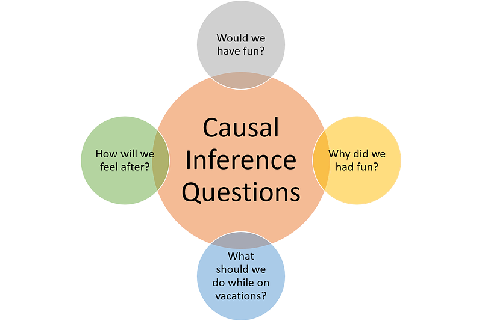

A Beginner's Guide to Causal Inference in Machine Learning
A Beginner's Guide to Causal Inference in Machine Learning: The "Why" Beyond the "What"
Causal Inference is the process of determining if a change in one variable causes a change in another. It moves beyond simply observing correlations to understanding the underlying cause-and-effect relationships. In machine learning, this means building models that can answer "what if" questions and make better decisions based on understanding causality.
The Fundamental Problem: Correlation vs. Causation
Imagine discovering that ice cream sales are highly correlated with shark attacks. A simple ML model might conclude that to reduce shark attacks, we should ban ice cream. But the real cause is a confounding variable: weather. When it is hot, more people buy ice cream AND more people go swimming, leading to more shark encounters. This is the classic "correlation does not imply causation" problem, and it is a major limitation of many machine learning models. They are great at finding patterns, but they do not understand the "why" behind them.
| Approach | Question Answered | Method | Limitation |
|---|---|---|---|
| Traditional ML | "What patterns exist?" | Pattern recognition and prediction | Cannot distinguish correlation from causation |
| Causal Inference | "What would happen if...?" | Causal modeling and intervention analysis | Requires strong assumptions about causal structure |
The Potential Outcomes Framework
For each individual $i$, we define two potential outcomes:
- $Y_i(1)$: Outcome if individual $i$ receives treatment
- $Y_i(0)$: Outcome if individual $i$ does not receive treatment
The individual causal effect is: $$ \tau_i = Y_i(1) - Y_i(0) $$
The Problem: We can only observe one of these outcomes for each individual!
Since we cannot observe individual causal effects, we estimate the average causal effect across the population: $$ \text{ATE} = E[Y_i(1) - Y_i(0)] = E[Y_i(1)] - E[Y_i(0)] $$ This represents the expected difference in outcomes if everyone received treatment versus if no one received treatment.
Key Concepts in Causal Inference
Variables that influence both the treatment and the outcome, creating misleading correlations. Proper causal inference requires identifying and controlling for confounders.
Visual representations of causal relationships. An arrow from X to Y indicates that X has a direct causal effect on Y.
Example for Ice Cream/Shark Attacks:
Weather → Ice Cream Sales
Weather → Swimming → Shark Attacks
Imagine you want to know if taking vitamin D improves health. There are two very different questions you could ask:
"What's the health of people who happen to take vitamin D?"
Math: $P(\text{Health} | \text{Vitamin D})$
This includes all the reasons why some people take vitamin D - maybe healthier people are more likely to take supplements!
"What would happen if we forced everyone to take vitamin D?"
Math: $P(\text{Health} | \text{do}(\text{Vitamin D}))$
This is the pure effect of the vitamin, removing all other factors that influence who takes it.
Key Insight: These two numbers are usually different! The do-operator $\text{do}(X)$ means "imagine we could magically force X to happen, ignoring all the usual reasons why X happens or doesn't happen."
Simple Example:
- Seeing: Some people have better health AND are more likely to afford vitamin D supplements
- Doing: If we gave vitamin D to everyone (rich and poor), what would be the pure effect of the vitamin itself?
The Four Steps of Causal Inference
| Step | Description | Key Questions |
|---|---|---|
| 1. Model | Create a causal model (usually a DAG) | What are the causal relationships? What are the confounders? |
| 2. Identify | Determine if the causal effect is identifiable | Can we estimate the causal effect from observational data? |
| 3. Estimate | Use statistical methods to estimate the effect | What is the magnitude of the causal effect? |
| 4. Refute | Test assumptions and robustness | How sensitive are our results to violations of assumptions? |
Common Causal Inference Methods
| Method | When to Use | Key Assumption | Advantage |
|---|---|---|---|
| Randomized Controlled Trials (RCTs) | When intervention is possible and ethical | Random assignment eliminates confounding | Gold standard for causal inference |
| Instrumental Variables | When treatment is endogenous | Instrument affects outcome only through treatment | Handles unobserved confounding |
| Regression Discontinuity | When treatment assignment has a cutoff | Smooth potential outcomes around cutoff | Quasi-experimental design |
| Difference-in-Differences | When we have before/after and treated/control groups | Parallel trends assumption | Controls for time-invariant confounders |
Propensity Score Methods
The propensity score is the probability of receiving treatment given observed covariates: $$ e(x) = P(T = 1 | X = x) $$
Key Property: If treatment assignment is unconfounded given X, then it is also unconfounded given the propensity score e(X).
- Matching: Match treated and control units with similar propensity scores
- Stratification: Stratify analysis by propensity score quintiles
- Weighting: Weight observations by inverse propensity scores (IPW)
- Covariate Adjustment: Include propensity score as a covariate in regression
Causal Machine Learning: Modern Approaches
The simplest causal ML approach uses two separate machine learning models:
- Model 1: Train on data where treatment = 1 (treated group)
- Model 2: Train on data where treatment = 0 (control group)
1. Split your data:
- $D_1 = \{(x_i, y_i) : t_i = 1\}$ (treated individuals)
- $D_0 = \{(x_i, y_i) : t_i = 0\}$ (control individuals)
2. Train two models:
- $\hat{m}_1(x) = $ ML model trained on $D_1$
- $\hat{m}_0(x) = $ ML model trained on $D_0$
3. Estimate treatment effect for new individual: $ \hat{\tau}(x) = \hat{m}_1(x) - \hat{m}_0(x) $
To improve the reliability of predictions, we can add a calibration step similar to temperature scaling:
1. Use validation data to learn a temperature parameter $T$
2. Apply calibration: $\text{Calibrated Output} = \text{Softmax}(\text{Model Output} / T)$
3. This helps ensure the models are well-calibrated and their difference is meaningful
This approach directly estimates what we want to know: "What would happen to this person if they got the treatment vs. if they didn't?" By training separate models on each group, we can predict both potential outcomes and compute their difference.
For more robust results, DML adds statistical corrections to handle biases that can occur when using ML models for causal inference. It uses cross-fitting and doubly robust estimation to maintain valid statistical inference even when the ML models aren't perfect.
Real-World Applications
- Estimating treatment effects from observational data
- Personalized medicine and treatment recommendations
- Understanding the causal impact of lifestyle factors on health outcomes
- Evaluating the impact of policy interventions
- Understanding the causal effects of education on earnings
- Measuring the impact of minimum wage laws on employment
- A/B testing and experimentation platforms
- Measuring the causal impact of product features
- Understanding the effect of marketing campaigns on customer behavior
Challenges and Limitations
- Unobserved Confounding: We may miss important confounding variables
- Model Specification: Causal graphs require domain knowledge and assumptions
- External Validity: Causal effects may not generalize across populations or contexts
- Measurement Error: Errors in measuring variables can bias causal estimates
- Sensitivity Analysis: Test how robust results are to violations of key assumptions
- Multiple Methods: Use different causal inference approaches and compare results
- Domain Expertise: Collaborate with subject matter experts to build realistic causal models
- Transparency: Clearly state assumptions and limitations of causal analyses
The Future of Causal ML
- Causal Discovery: Automatically learning causal structures from data
- Heterogeneous Treatment Effects: Understanding how treatment effects vary across individuals
- Causal Reinforcement Learning: Making decisions based on causal understanding
- Fairness and Causality: Using causal reasoning to build fairer AI systems
Conclusion: Building AI That Understands "Why"
Causal inference represents a fundamental shift in how we think about machine learning and AI. By moving beyond pattern recognition to understanding cause and effect, we can build systems that are more robust, interpretable, and capable of making better decisions in the real world.
The field combines rigorous mathematical frameworks with practical machine learning techniques, offering a path toward AI systems that don't just predict what will happen, but understand why it happens and what we can do to change it.
References
- Pearl, J. (2009). Causality: Models, Reasoning and Inference. Cambridge University Press.